Voronoi Map Treemaps for ggplot2
ggvmap partitions a convex polygon into cells whose areas are proportional to data weights — a Voronoi treemap. It implements the Nocaj & Brandes (2012) iterative power-diagram algorithm in pure R (no compiled code, no CGAL, no JavaScript) with first-class ggplot2 integration: hierarchical (grouped) layouts, annotation rings, flags, value labels, and interactive hover maps.
Installation
ggvmap is pure R with a single hard dependency (ggplot2) — no compilation, no system libraries. Install the latest version from GitHub:
# with remotes (lightweight)
install.packages("remotes")
remotes::install_github("loukesio/ggvmap")
# ...or with devtools
devtools::install_github("loukesio/ggvmap")To install a specific release, append its tag:
remotes::install_github("loukesio/ggvmap@v0.3.0")Some features use optional packages — install the ones you need:
install.packages(c(
"ggimage", # vm_add_flags(), vm_add_images()
"ggiraph", # interactive = TRUE + vm_girafe()
"geomtextpath", # curved ring labels
"ggtext", # markdown titles
"showtext" # custom fonts
))Then load it like any package:
The one-glance demo
Everything below is drawn from one bundled dataset — data(freshwater), each country’s share of global renewable freshwater (FAO Aquastat via World Bank, 2022):
library(ggvmap)
data(freshwater)
vm <- voronoi_map(freshwater$share, labels = freshwater$country,
group = freshwater$region, clip = clip_circle(),
seed = 5, max_iter = 80)
ggvmap(vm, palette = "alger", autoscale = TRUE, min_area = 0.004,
label_col = c(Brazil = "grey95"), fontface = c(Brazil = "bold")) |>
vm_add_labels(fmt = \(v) paste0(v, "%"), autoscale = TRUE) |>
vm_add_ring(style = "arc", palette = "alger", values = TRUE)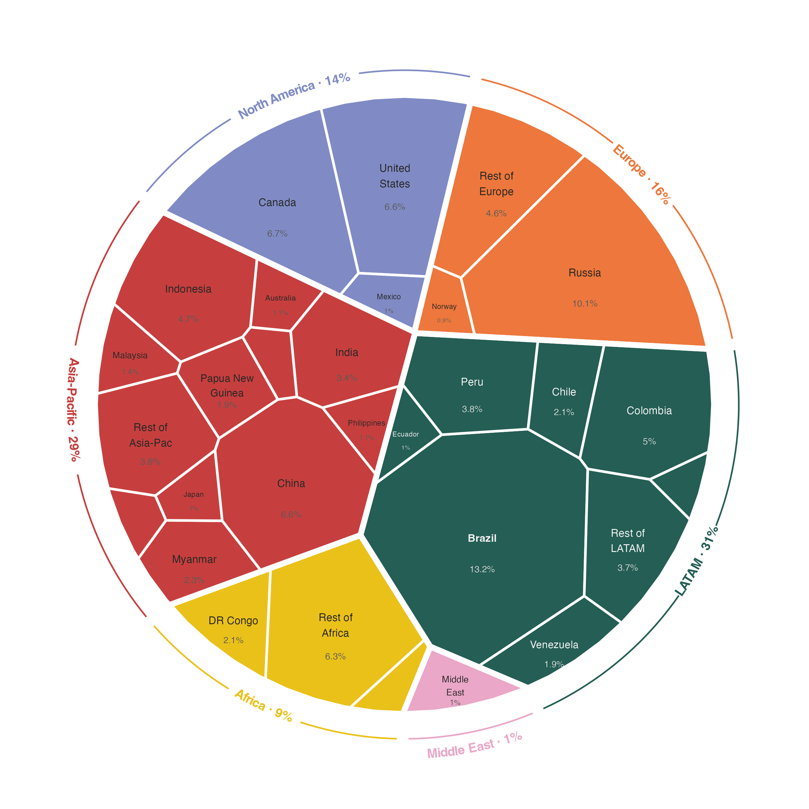
The full script is examples/freshwater_tour.R.
Quick start
ggvmap() computes and plots in one call — give it weights, or a precomputed voronoi_map object:
library(ggvmap)
data(freshwater)
top10 <- freshwater[!grepl("^Rest of|Middle East", freshwater$country), ][1:10, ]
ggvmap(top10$share, labels = top10$country, palette = "alger", seed = 42)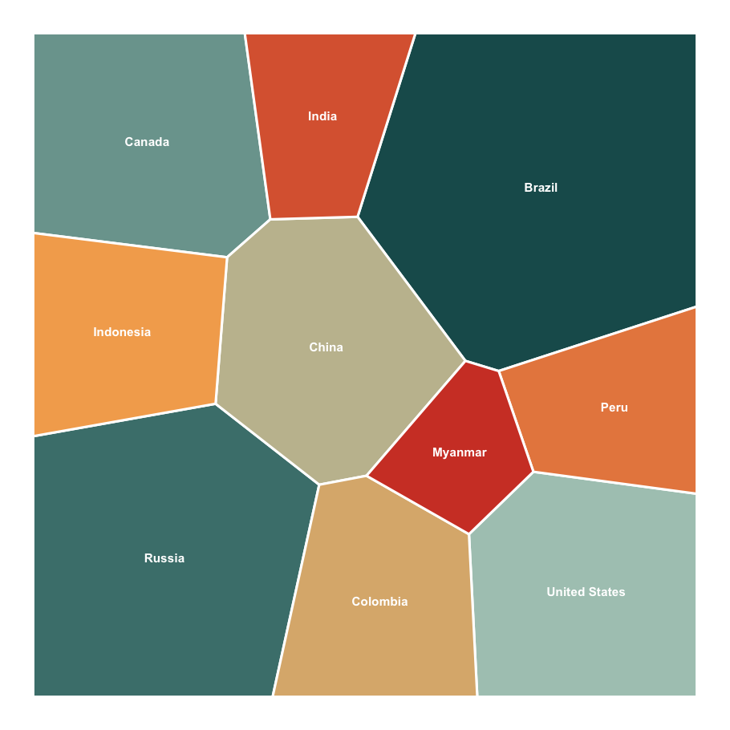
Feature tour
Any convex boundary
The same data on clip_square(), clip_hexagon(), clip_circle(), clip_diamond(), clip_triangle(), clip_pentagon(), clip_octagon(), clip_rectangle(), clip_ellipse() — or any regular_polygon(n):
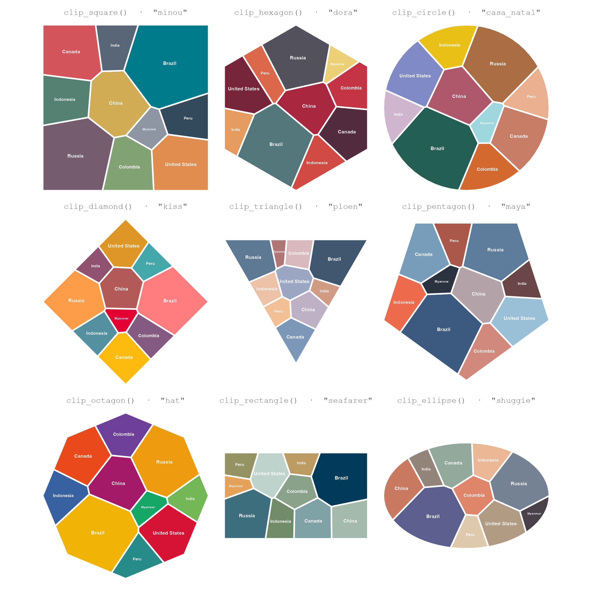
Small cells: autoscale and min_area
Real part-of-whole data has a long tail of sub-1% cells. autoscale = TRUE shrinks their labels (floored at 60% of label_size), and min_area hides labels below an area threshold:
vm <- voronoi_map(freshwater$share, labels = freshwater$country,
group = freshwater$region, clip = clip_circle(),
seed = 5, max_iter = 80)
ggvmap(vm, palette = "alger", label_col = "grey15",
autoscale = TRUE, min_area = 0.004)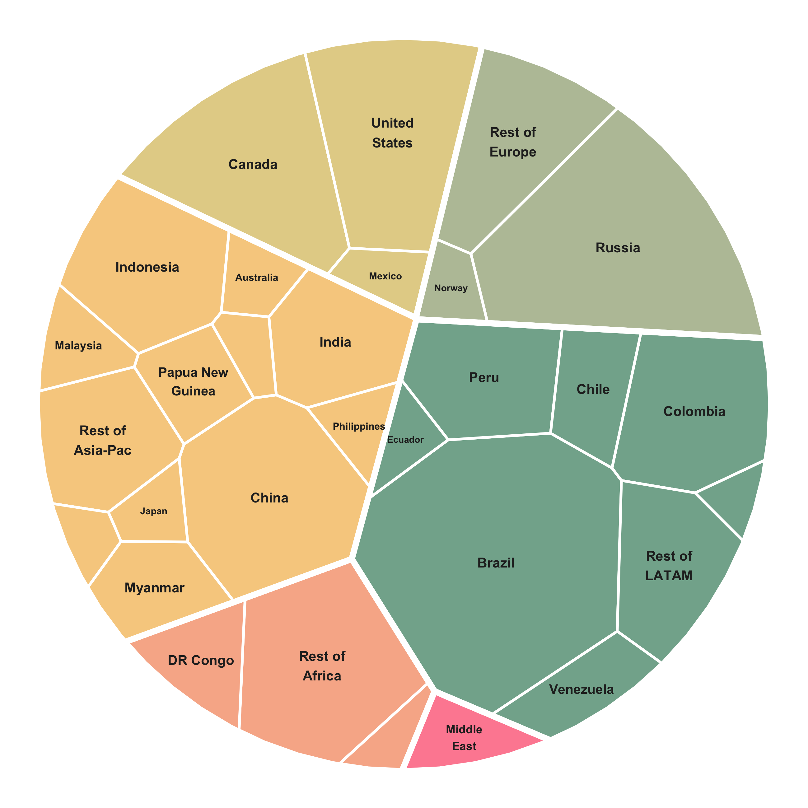
Emphasis: single cells and single groups
fontface, label_col and group_border_col accept vectors named by cell or group, and label_cells / cells restrict which cells get labels at all:
ggvmap(vm, palette = "alger",
label_cells = c("Brazil", "Russia", "Canada"),
label_col = c(Brazil = "grey95", Russia = "grey15",
Canada = "grey15"),
fontface = c(Brazil = "bold.italic"),
group_border_col = c(LATAM = "#333333")) |>
vm_add_labels(fmt = \(v) paste0(v, "%"),
cells = c("Brazil", "Russia", "Canada"),
col = c(Brazil = "grey85"))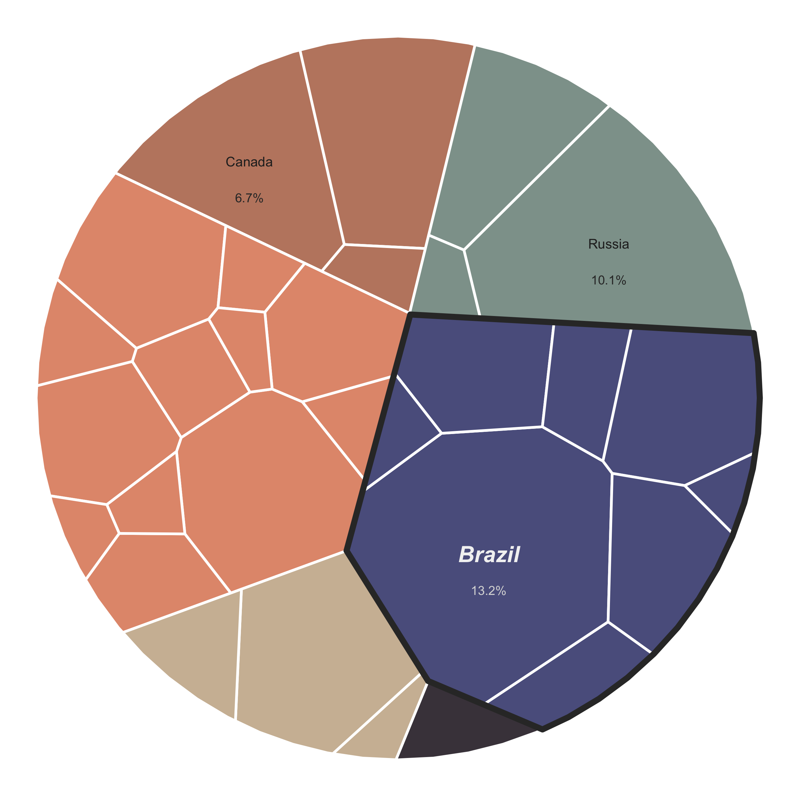
Continuous fill
ggvmap(vm, fill_by = "data_weight", palette = "alger",
label_col = "grey15", autoscale = TRUE, min_area = 0.006,
legend = TRUE)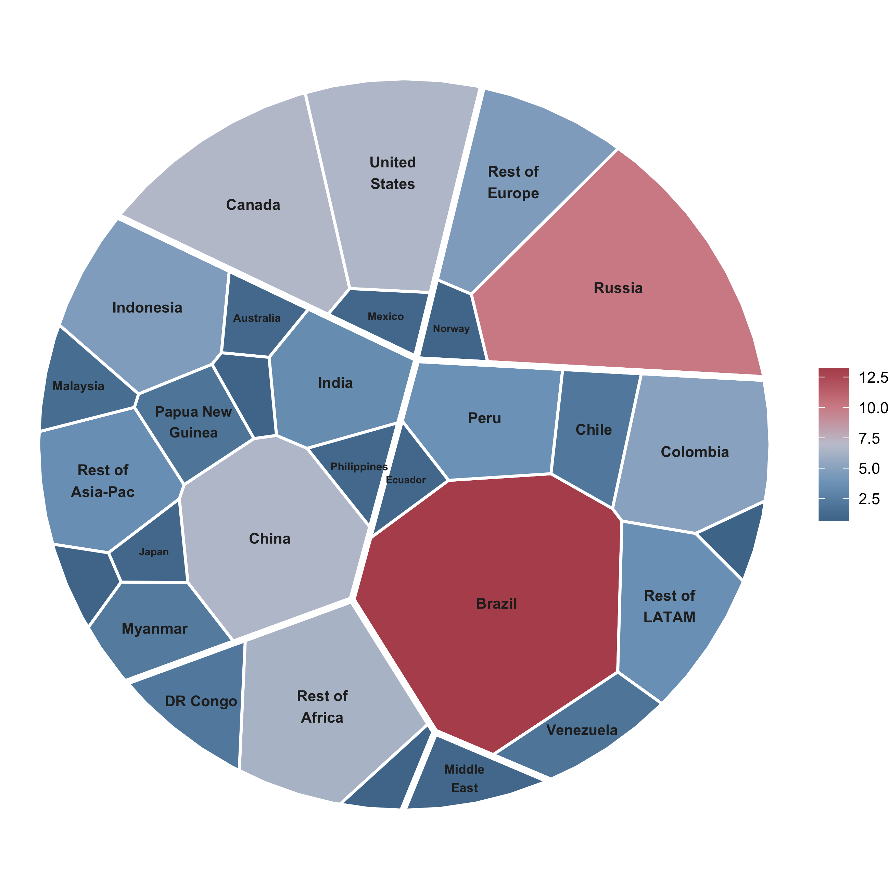
Ring styles: band and arc
vm_add_ring() wraps a circular map in a group-aligned annotation ring: the filled "band" (default), or the thin "arc" with the group label — optionally with its share (values = TRUE) — sitting in a gap broken into the line:
ggvmap(vm, palette = "alger", label_col = "grey15",
autoscale = TRUE, min_area = 0.004) |>
vm_add_ring(style = "band", palette = "alger", width = 0.11)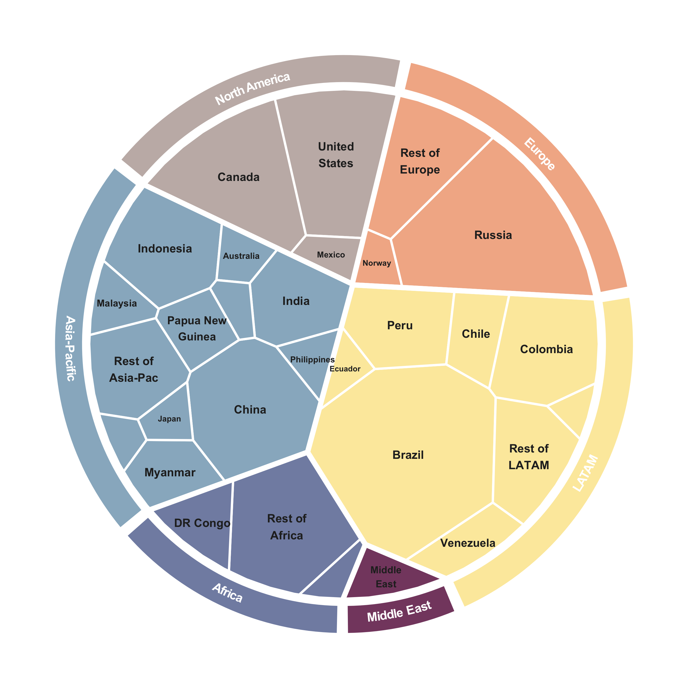
ggvmap(vm, palette = "alger", label_col = "grey15",
autoscale = TRUE, min_area = 0.004) |>
vm_add_ring(style = "arc", palette = "alger", values = TRUE)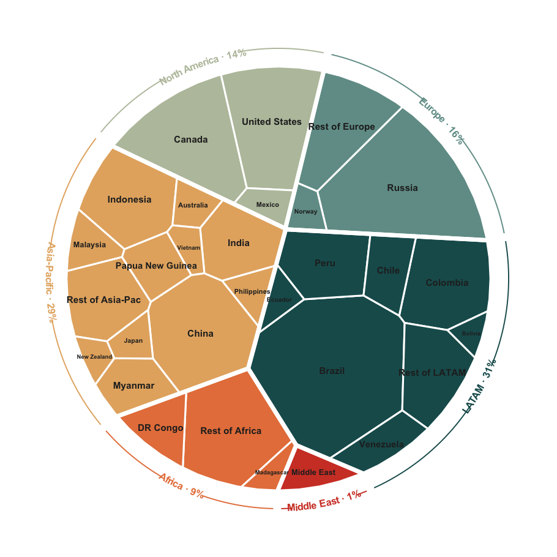
The arcs follow the group colours by default; colors = overrides them — one colour for all arcs (e.g. colors = "#333333" for a uniform dark ring), or a vector named by group for full control:
ggvmap(vm, palette = "alger", label_col = "grey15",
autoscale = TRUE, min_area = 0.004) |>
vm_add_ring(style = "arc", colors = "#333333", values = TRUE)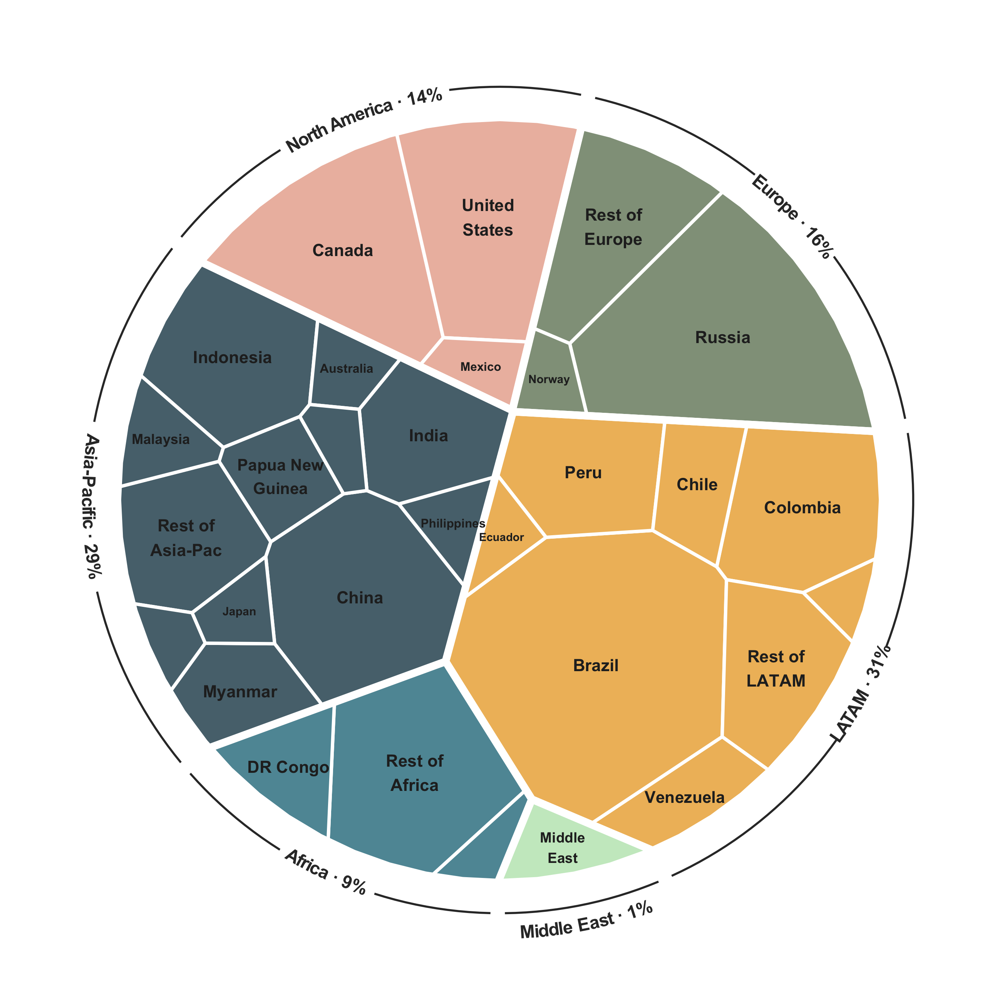
Flags
vm_add_flags() resolves country names (English or German) to national flags via the ggimage package:
ggvmap(top10$share, labels = top10$country, clip = clip_circle(),
palette = "alger", label_col = "grey15", seed = 42) |>
vm_add_labels(fmt = \(v) paste0(v, "%")) |>
vm_add_flags(size = 0.05, nudge_y = 0.055)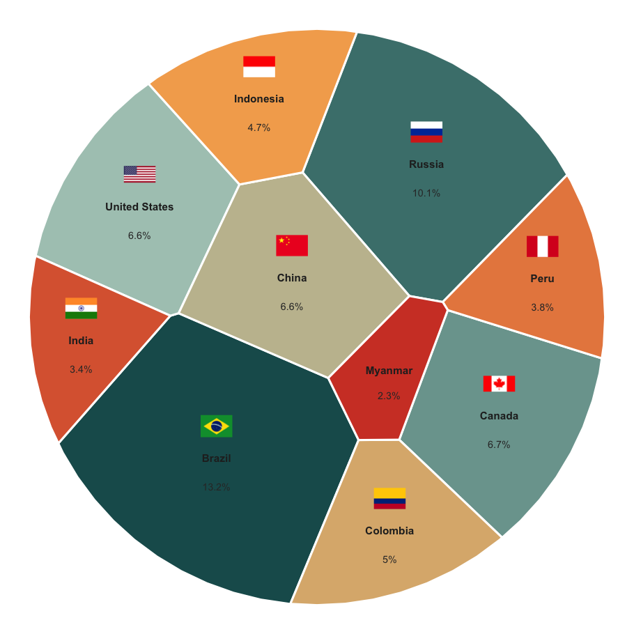
Titles and fonts
A ggvmap plot is a ggplot, so titles work the usual way:
ggvmap(top10$share, labels = top10$country, palette = "alger", seed = 42) +
ggplot2::ggtitle("Countries with the most freshwater",
subtitle = "Share of global renewable freshwater, 2022") +
ggplot2::theme(plot.title = ggplot2::element_text(face = "bold", hjust = 0.5),
plot.subtitle = ggplot2::element_text(colour = "grey40",
hjust = 0.5))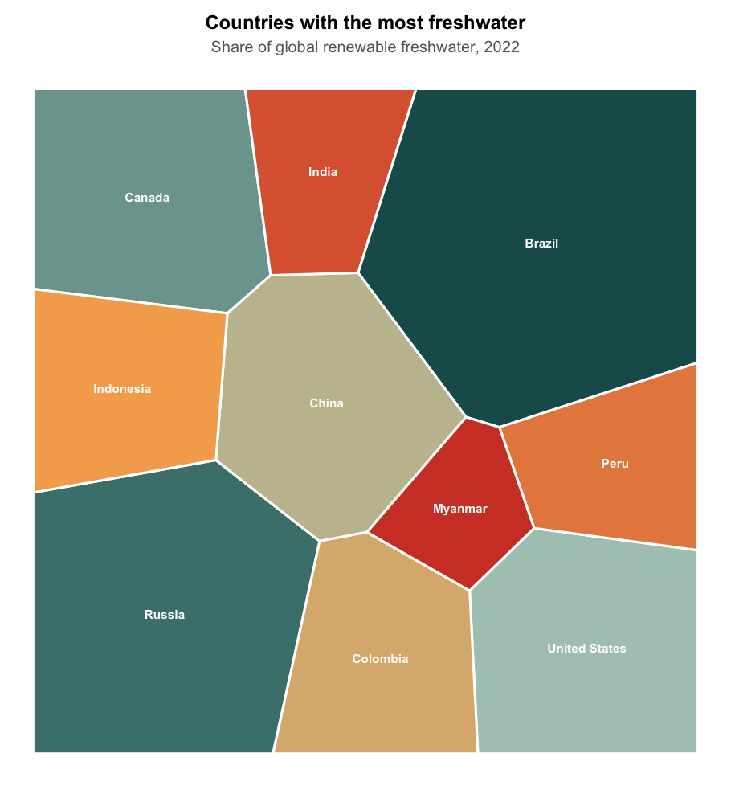
With ggtext, titles take markdown — handy for colour-coding words to the map instead of using a legend:
library(ggtext)
ggvmap(top10$share, labels = top10$country, palette = "alger", seed = 42) +
ggplot2::labs(title = paste0(
"**<span style='color:#1A5B5B;'>Brazil</span> holds more freshwater ",
"than any other country**")) +
ggplot2::theme(plot.title = element_markdown(hjust = 0.5, size = 13))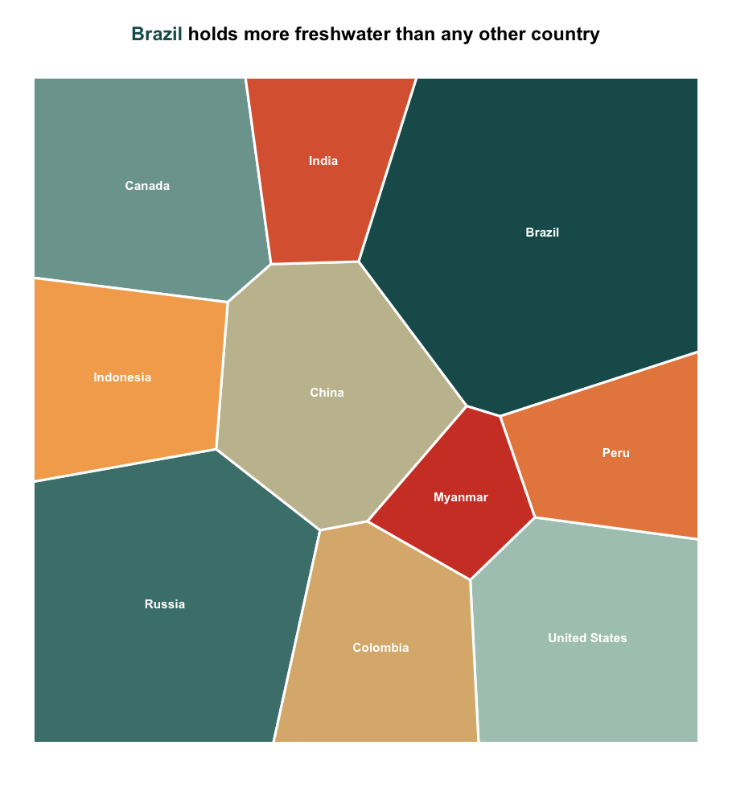
Every text layer accepts a family =, so custom fonts (e.g. loaded with showtext) apply directly — no update_geom_defaults() workaround:
library(showtext)
font_add_google("Bitter", "bitter")
showtext_auto()
ggvmap(top10$share, labels = top10$country, palette = "alger",
family = "bitter", seed = 42) |>
vm_add_labels(fmt = \(v) paste0(v, "%"), family = "bitter")Interactive maps
ggvmap(interactive = TRUE) makes the cells hoverable (highlight + tooltip) via ggiraph; render the widget with vm_girafe():
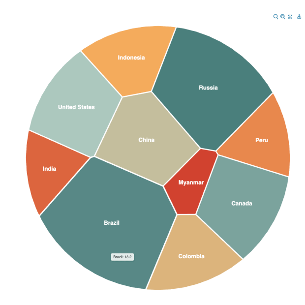
Live version (hover it yourself) in the Interactive article.
Step-by-step usage
# 1. Compute the map
vm <- voronoi_map(
weights = freshwater$share,
labels = freshwater$country,
clip = clip_hexagon(),
seed = 42
)
print(vm)
# 2. Plot with ggplot2
ggvmap(vm, palette = "alger")
# 3. Or with base R
plot(vm)
# 4. Access the tidy data frame for custom ggplot2
df <- vm_as_df(vm)
head(df)How it works
The algorithm is like a room full of balloons: each balloon wants to claim space proportional to its importance. Every iteration, each balloon drifts toward the centre of its current territory (position adaptation) and inflates or deflates to grab the right amount of area (weight adaptation). After enough rounds, the room is perfectly partitioned.
Under the hood, it’s an iterative power diagram (weighted Voronoi tessellation) following:
Nocaj, A. & Brandes, U. (2012). “Computing Voronoi Treemaps — Faster, Simpler, and Resolution-independent.” Computer Graphics Forum, 31(3), 855–864. doi:10.1111/j.1467-8659.2012.03078.x
Is it correct?
Yes — and it’s verified. The tessellation is an exact power diagram (to floating-point precision): cells satisfy the defining minimum-power-distance property, tile the domain with no gaps or overlaps, are all convex, and the hierarchical layout is a valid nested power diagram. These invariants are enforced by tests/testthat/test-correctness.R and explained in the Correctness article.
Example gallery
More worked examples (with code) live in examples/ — grouped layouts, custom rings, flags on different shapes, and a combined infographic.
API reference
| Function | Purpose |
|---|---|
voronoi_map() |
Core computation (add group = for a hierarchical layout) |
ggvmap() |
The main ggplot2 visualisation (accepts a map or raw weights; autoscale, min_area, fontface, family, per-cell label_col) |
autoplot() |
Alias for ggvmap() via the ggplot2 generic |
plot() |
Base R visualisation |
vm_add_ring() |
Outer annotation ring: style = "band" or "arc" (with values, linetype, offset) |
vm_add_flags() |
Add country flags at cell centroids |
vm_add_images() |
Add arbitrary images at cell centroids |
vm_add_labels() |
Add value labels (inside, autoscale, min_area, per-cell col) |
vm_girafe() |
Render an interactive = TRUE plot as a hoverable widget |
vm_as_df() / vm_centroids()
|
Tidy data frame / centroids |
country_to_iso() / flag_url() / flag_cache()
|
Flag helpers |
clip_square() / clip_hexagon() / clip_circle() / clip_diamond() / regular_polygon()
|
Boundary shapes |
Comparison with other R packages
| Feature | ggvmap | voronoiTreemap | WeightedTreemaps |
|---|---|---|---|
| Backend | Pure R | D3.js (htmlwidget) | C++ / CGAL |
| ggplot2 native | ✅ | ❌ | ❌ |
| Dependencies | ggplot2 only | htmlwidgets, d3 | RcppCGAL |
| Hierarchical | ✅ (grouped) | ✅ | ✅ |
| Annotation ring / flags | ✅ | ❌ | ❌ |
| Custom shapes | ✅ any convex | ✅ | ✅ |
| Install complexity | Trivial | Medium | Hard (CGAL) |